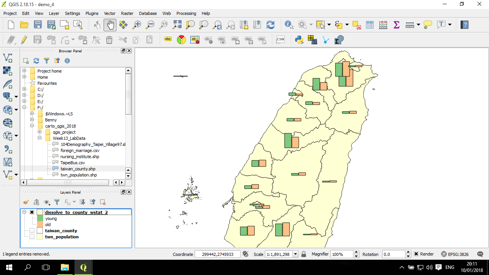

地圖上的柱狀圖 (bar chart)
柱狀圖的設定方式基本上與圓餅圖一致。
資料
這小節也將使用縣市人口資料進行說明，是透過 twn_population.shp 經過 屬性計算 及 dissolve後而得。
進入diagram 設定
在圖層列表中，選取好縣市人口資料圖層的情況下，在工具欄第三行有一個圓餅圖形狀，是 Layer Diagram Options，也就是快速進入圖層圖表選項的按鈕：
進入的圖表設定視窗較前者簡單，只有 diagram 的設定。在這裡，將原來的 No diagram 下拉選單改成 Histogram 柱狀圖：

預設應該是還未設定任何欄位；不過因為同一個檔案在上一節的圓餅圖有設定過，因此在我的視窗這裡自動延續前面的一些設定。
可以初步先設定成同樣的欄位表，然後按下套用：
在 Options 分頁中有一些可以調整的設定，例如將長柱的方向改成向右或其他三個方向：
因為在這個例子中，所有的縣市都是以中間分組(15-65歲)的人最多(涵蓋較大範圍的人口)，因此將視角調整成觀察老年人口(65以上)及年輕人口(15歲以下) 分佈狀況。
這裡需要設定的是，選取要移除的欄位，點一下中間的減號：
接下來按套用與確認，柱狀圖就完成了：
